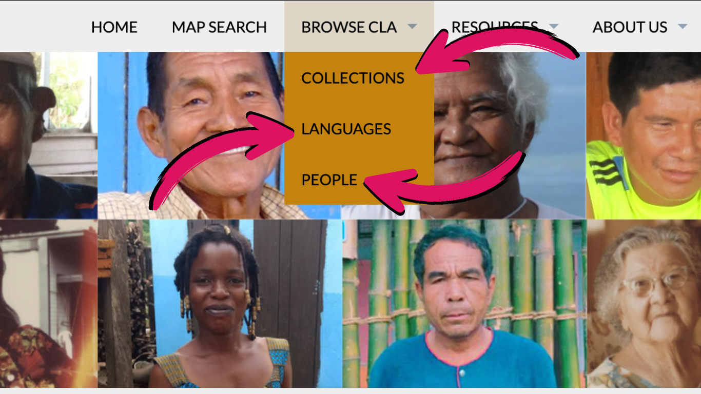
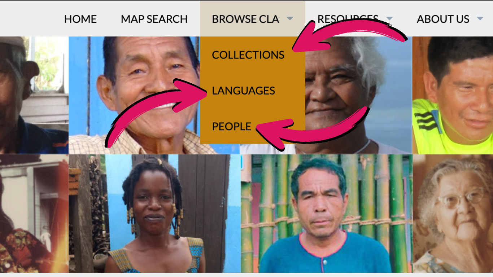
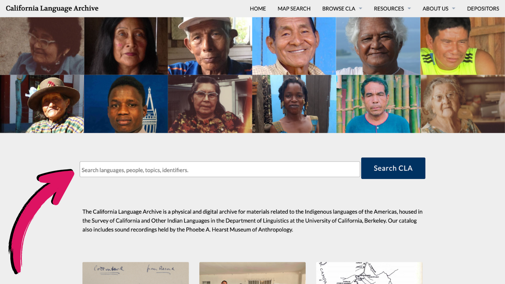
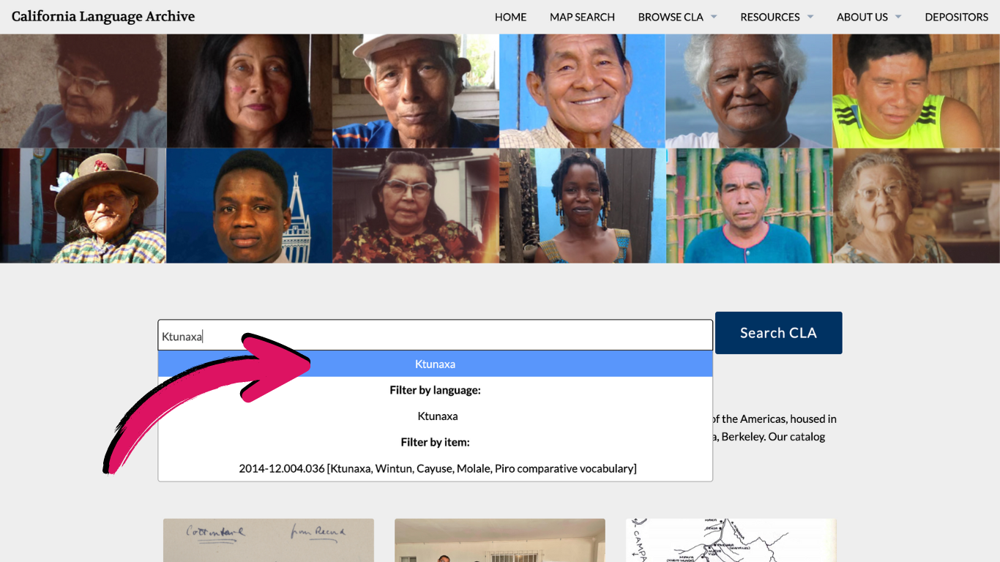
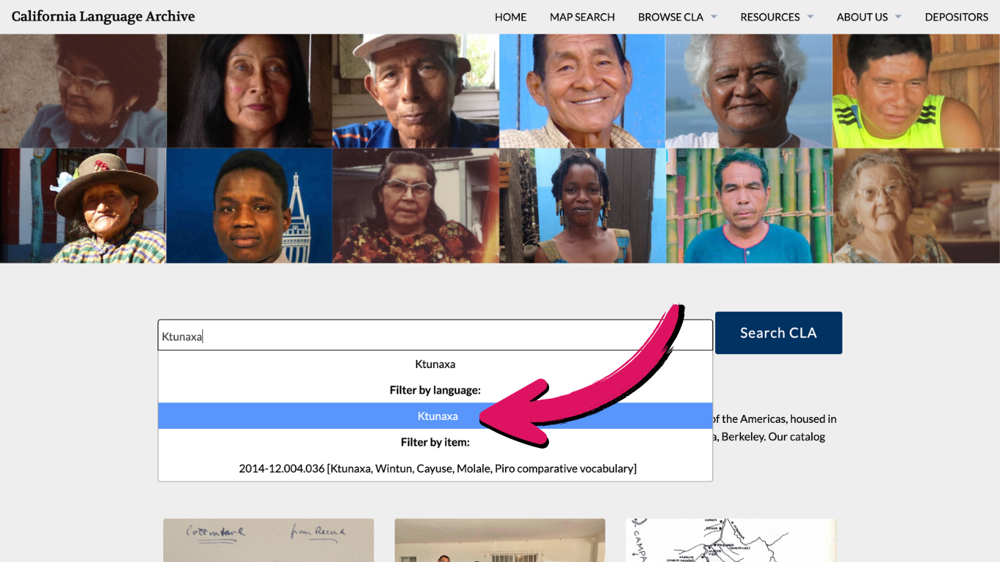
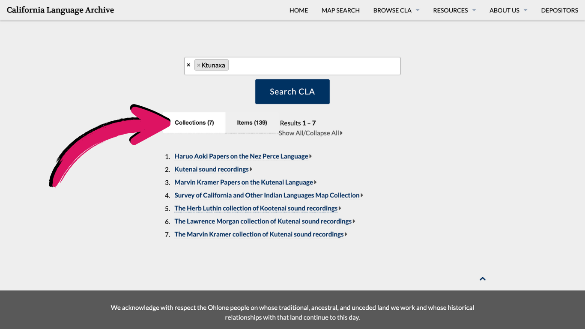
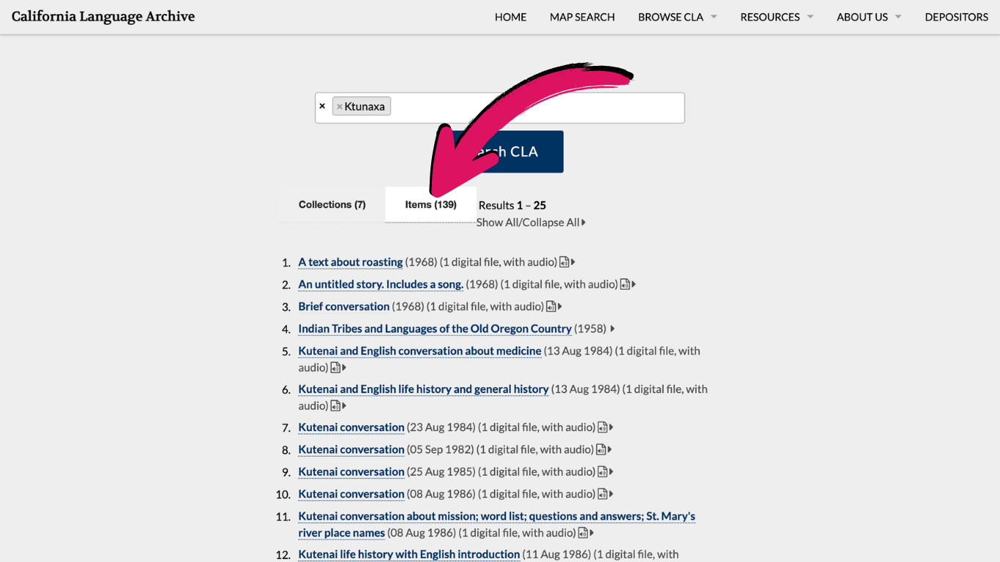
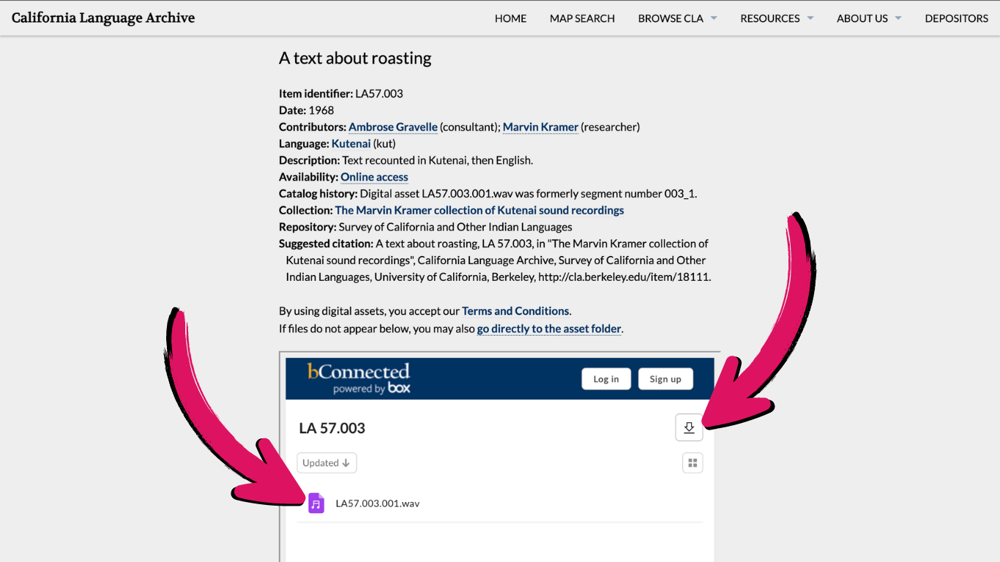
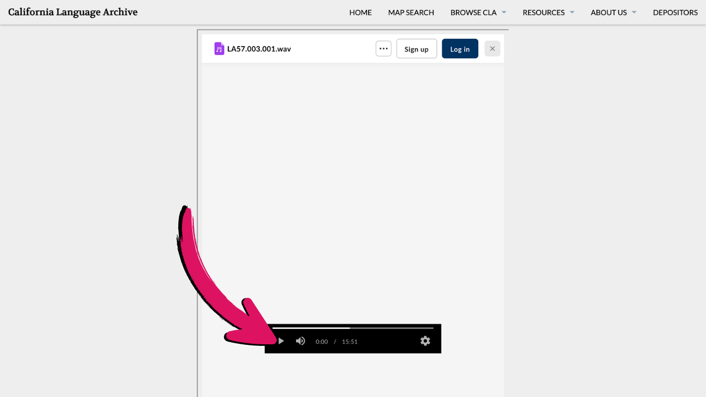
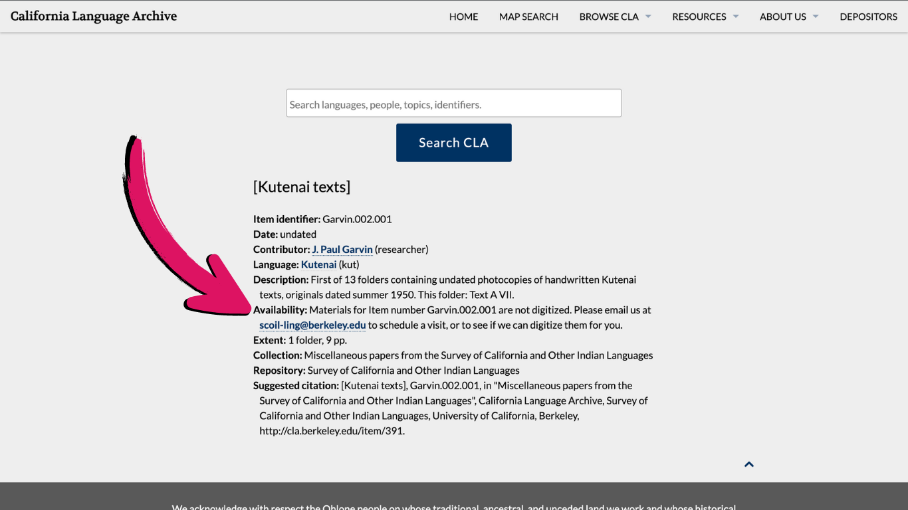

Frequently asked questions
General
The California Language Archive is a hub for language materials ranging from audio and video recordings to field notebooks to maps and more. These items are digitally and/or physically housed in the Survey of California and Other Indian Languages in the Department of Linguistics at the University of California, Berkeley. The catalog of these items, also including relevant items at the Phoebe A. Hearst Museum of Anthropology, is accessible through this website.
The materials we house can be used for a wide variety of purposes, including language reclamation, educational endeavors, and personal and academic research. You might find recordings of cultural stories to share in your classroom, look through fieldnotes for linguistic research, or search for songs to listen to the voices of ancestors. We invite you to respectfully use these materials for non-commercial non-profit educational, personal, and research use, following any applicable access restrictions and our terms of use.
An item is an individual entry in the catalog, such as a recording or a notebook. In some cases, an item will have multiple components, such as a recording and a corresponding written transcription. Each item has a unique alphanumeric identifier.
Items in the catalog are organized into collections based on some shared characteristics, such as the depositor (the person who brought the materials to the archive), language, topics, time period, and more. Just like the items, each collection has a unique identifier. Items can belong to only one collection.
When you search in our catalog, you will be directed to a page that automatically lists collections. To see individual items, you can either select a collection to see all of the items in that collection, or you can switch to the “items” tab to see the items that were returned by your search.
Top left to right: Rose Barneche (Kawaiisu, CA), Graciela Quenamá Lucitante (A'ingae, Ecuador), Adriano Ríos Sánchez (Máíjĩ̵̀kì, Peru), Hermenegildo Díaz Cuyasa (Iquito, Peru), Johnny Rudolph (Nukuoro, Federated States of Micronesia), Miguel Sergio Salazar (Caquinte, Peru)
Bottom left to right: Maximina Barbosa Utcañe (Yauyos Quechua, Peru), Linus Kipkoech (Kipsigis, Kenya), Essie Parrish (Kashaya, CA), Edwige Agodio (Guébie, Côte d'Ivoire), Kraisorn Hardkadee (Kuy, Thailand), Laura Somersal (Wappo, CA)
You can email us at scoil-ling@berkeley.edu, call us at (510) 642-8891, or visit us in person at 1311 Dwinelle Hall, UC Berkeley.
Using our website
There are two ways to find materials in our catalog: browsing by collection, language, or person, or using our search bar.
Browsing by collection, language, or person:
On the menu bar at the top of our page, there is a button labeled “Browse CLA”. If you hover over it, three options appear: Collections, Languages, People. If you click Collections, you will see an alphabetical list of all of our collections; if you select one, you will be redirected to that collection’s page. If you click Languages, you will see an alphabetical list of all of the languages that are covered in our collections; if you select one, you will be sent to a list of collections and items that we have involving that language. If you click People, you will see an alphabetical list of all of the people involved in the materials, including speakers (consultants), researchers, and depositors. If you select one of these names, you will be sent to a list of all collections and items we have that involve that person.  

Using our search bar (more common)
Our home page has a search bar for the catalog. When typing in a search word(s), there are two types of keyword searches you can make. The first is by selecting a preset language, person, collection name, or item name. When you begin typing, these will appear below the search bar under the label Filter by:. By searching by a preset keyword, you will be brought to a list of all collections and items with that tag. If you do not choose a preset keyword, the search will return any item or collection that has that exact spelling listed anywhere in its title or description. This may be helpful if you are looking for a certain type of material, such as stories, or certain topics. However, it is more likely to return results that are less relevant.   
After you search, you are brought to a page with two tabs: collections and items. If you click on a collection, you will be brought to that collection’s page and can then see all of the items in that collection. If you click on an item, you will be brought to that item's specific page.  
Note that you can search by multiple keywords (whether preset or not). This can help refine your search; for example, you could search by the preset keyword Yurok and then also by the word story to find items that are tagged as being in Yurok, that mention the word story in their titles or descriptions.
When you search by a preset keyword (in other words, when you type in a language and select the keyword listed under Filter by language:, the search will look for items and collections involving all of the spellings and names that the language may be called in our materials. For example, by searching the preset keyword Ktunaxa, items and collections that call the language Kutenai and Kootenai also appear in the results. It is possible, however, that we have missed some forms; if this is the case, you can try searching by another spelling and see if other useful results come up.
Once you have navigated to a specific item's page, if that material is digitized and publicly accessible, it will be found by scrolling down and looking at the embedded bConnected Box page. Here, you will be able to click on the file(s) and view or listen to them. You can also download them by clicking on the gray Download button in the top right corner.  
If you are having trouble downloading any file(s), we have a few suggestions. If you are using a phone or tablet, try downloading the file(s) from a computer if you can. If you have issues with your wifi connection, try downloading the file(s) from a place with faster wifi (such as a public library) if that is an option. If you are still having issues, you can call or email us. We may be able to send the file to you directly, or send a compressed (smaller) version of the file.
Some items will not be available online, so they will not have the embedded bConnected Box page. You can check an item's availability (digitization and restriction status) which is listed under the line Availability in the item's description. 
Please email us at scoil-ling@berkeley.edu or call us at (510) 642-8891 for support. We aim to make our website and materials as accessible as we can, but we are not in a position to provide transcripts, image descriptions, or other alternative access methods for all of our materials. However, we can do our best to provide such alternatives for the material(s) you would like to access on an individual basis when possible.
About the materials
The majority of the items housed in the archive are brought to us by researchers involved in language projects. However, we also sometimes receive materials from speakers themselves, from descendants of speakers or researchers, from colleagues of researchers, and from other community members. Additionally, we have accessioned a number of collections that were formerly held by the Berkeley Language Center.
In general, we focus on accessioning items on Indigenous languages in the western hemisphere. Materials do not have to be from academics to be archived here, and we are especially interested in collaborating with anyone looking to archive materials from their community’s language with us. If you are not sure whether your materials would be a good fit for the CLA, call or email us. If we cannot accept your materials, we may be able to recommend another archive.
We are committed to treating the language materials that have been entrusted to us with respect. Unfortunately, some errors may be found in our catalog. Occasionally, an item is mislabeled with a nearby but different language, or a speaker is misattributed, or the description of the content is incorrect. If you have any concerns about the accuracy of the metadata (people, language, description, etc.) of materials from your community, please call or email us.
Access
Two factors are involved with availability of items: whether they are digitized, and whether they are restricted (requiring approval) or unrestricted (publicly accessible). An item (or entire collection) may be undigitized and restricted, undigitized and unrestricted, digitized and restricted, or digitized and unrestricted. The access level of an item is listed in the Availability: field.
While a large portion of the archive has been digitized (especially original notebooks), there are many items held physically in the archive that have not yet been digitized. We are working on digitizing more and more of our collections to improve accessibility to these items; however, please be aware that this is a long and ongoing process. If you are trying to access an item that has not yet been digitized, you can call or email us, and we will prioritize it for digitization. You can also reach out to us to set up an in-person visit.
Additionally, while many of the materials in the archive are accessible to anyone who follows our guidelines, some materials are restricted from public access. This is often the case with materials that cover culturally sensitive topics or present privacy concerns. If you would like to request access to a restricted material, you can call or email us or fill out our access request form. For many items, approval can be granted by staff at the CLA; for others, we will need to reach out to the people involved in the item (e.g., the speaker or the depositor). This process may take time, and we appreciate your patience.
Historically, access restrictions were most often determined by the depositor. In some cases, the depositor may have consulted with the speaker or others involved in the materials in determining access restrictions; however, we realize that depositors have often not had speakers or the language community in mind when establishing access restrictions.
More recently, depositors are more likely to have discussed access restrictions with speakers or others involved in the materials to establish whether materials should be publicly accessible, and, if not, who should be given access and how requests for access will be handled.
If any concerns about access restrictions are brought to our attention, we do our best to work with speakers (or their descendants) and the broader language community to address and correct any issues.
If you would like to access an undigitized item(s), call or email us. We will do our best to prioritize digitization for that item. We also invite you to visit the archive in person; this may be necessary depending on the size of the digitization request.
If you would like to access a restricted item(s), call or email us or fill out our access request form. Depending on the specific item or collection, staff at the CLA may have the authority to grant access. For other items, it may be necessary to get approval from the speaker(s), researcher(s), depositor(s), descendent(s), or other people connected to the material.
We are committed to treating the language materials that have been entrusted to us with respect, and to respect the autonomy of the communities they come from. If you have any concerns about the accessibility of materials from your community, or reason to believe that an item(s) should be restricted or unrestricted, please call or email us.
Visiting the archive
The CLA frequently welcomes visitors to our physical space in 1311 Dwinelle Hall at the University of California, Berkeley. Visitors come for a variety of reasons: many come to view undigitized items; others simply prefer to view physical items regardless of whether they have been digitized. Visiting the archive is also a great way to get individualized support from CLA staff.
In-person visits are available by appointment. Please call or email us to schedule.